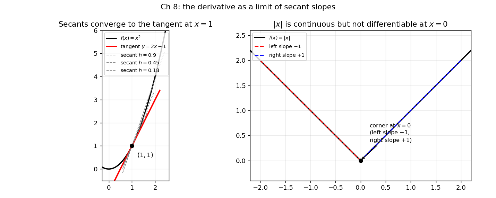

8. Single-variable calculus: continuity, differentiability, derivatives
Chapter 7 ended with a one-dimensional sketch: derivatives as local linear maps, and the “bowl” idea that decides minima. This chapter builds that sketch into the full one-variable machinery — limits, continuity, the derivative, and how to find maxima and minima. Everything in machine learning is, at bottom, a function you want to minimize (the loss) or a rate at which something changes (the loss with respect to a parameter). This chapter is the instrument panel for reading those functions.
The single-variable story has three acts:
- Limits — what it means for \(f(x)\) to “approach” a value.
- Continuity — no jumps: the limit equals the value.
- Differentiability — how fast \(f\) changes, and where it bottoms out.
8.1 Limits: the “approach” idea
Intuitively, we write \[\lim_{x \to a} f(x) = L\] to mean: as \(x\) gets closer and closer to \(a\) (from either side), the values \(f(x)\) get closer and closer to \(L\). The key question this answers: what would \(f\) equal at \(a\) if it behaved nicely there? — regardless of what \(f(a)\) actually is, or whether \(f(a)\) is even defined.
Note: The limit as \(x \to a\) has nothing to do with the value (or existence) of \(f(a)\). A limit only looks at \(x\) near \(a\), never at \(a\).
8.1.1 The \(\varepsilon\)–\(\delta\) definition, stated carefully
“Gets closer and closer” is too vague to prove anything with. The formal definition pins down how close with two tolerances: \(\varepsilon\) (how close the outputs must be to \(L\)) and \(\delta\) (how close the inputs must be to \(a\)).
Def. \(\lim_{x \to a} f(x) = L\) means: for every \(\varepsilon > 0\) there exists a \(\delta > 0\) such that, for every \(x\) in the domain with \(0 < |x - a| < \delta\), \[|f(x) - L| < \varepsilon.\]
Read it with the quantifier shorthand from §1.11: \[\forall \varepsilon > 0,\ \exists \delta > 0 \text{ such that } \bigl(0 < |x - a| < \delta \;\Rightarrow\; |f(x) - L| < \varepsilon\bigr).\] The order matters: first someone hands you any tolerance \(\varepsilon\) on the output (\(\forall \varepsilon > 0\)); then you must produce a window \(\delta\) around \(a\) (\(\exists \delta > 0\)) that forces every output inside it to satisfy the tolerance. The \(\delta\) is allowed to depend on \(\varepsilon\) — smaller tolerance, tighter window. The \(0 <\) part says \(x = a\) itself is excluded: the limit does not care about \(f(a)\).
Basically, … Pick any bullseye size \(\varepsilon\) around \(L\) on the \(y\)-axis. The definition promises you can find a (possibly tiny) window \(\delta\) around \(a\) on the \(x\)-axis so that the whole graph inside that window — except possibly the point at \(a\) itself — lands inside the bullseye.
Remark on the sources. The course book builds limits from sequences: \(\lim_{x \to a} f(x) = L\) iff \(f(x_n) \to L\) for every sequence \(x_n \to a\). That sequential definition and the \(\varepsilon\)–\(\delta\) one above are equivalent — they certify the same limits. We use \(\varepsilon\)–\(\delta\) here because it is the standard working form (and it is exactly the language the MLF lectures use when they say “as \(x\) approaches \(a\)”).
eg 1 — proving a limit with \(\varepsilon\)–\(\delta\) (full steps). Claim: \(\lim_{x \to 1} x^2 = 1\).
Let \(\varepsilon > 0\) be given. We need \(\delta > 0\) with \(0 < |x - 1| < \delta \Rightarrow |x^2 - 1| < \varepsilon\).
- Factor the output distance: \(|x^2 - 1| = |x - 1|\,|x + 1|\).
- Tame the \(|x + 1|\) factor: first demand \(\delta \le 1\), so \(|x - 1| < 1\) gives \(0 < x < 2\), hence \(|x + 1| = x + 1 < 3\).
- Then \(|x^2 - 1| = |x - 1|\,|x + 1| < 3|x - 1|\). To make this \(< \varepsilon\), it suffices to have \(|x - 1| < \varepsilon/3\).
- Choose \(\delta = \min(1, \varepsilon/3) > 0\). Then \(0 < |x - 1| < \delta\) gives \(|x^2 - 1| < 3\delta \le 3(\varepsilon/3) = \varepsilon\). ∎
Basically, … An \(\varepsilon\)–\(\delta\) proof is a recipe: “you give me the output tolerance, I hand you back the input window.” Step ii) is the standard trick — first lock \(x\) into a small fixed neighborhood so the extra factor can’t misbehave, then shrink \(\delta\) further to hit the tolerance.
8.1.2 One-sided limits
\(x\) can approach \(a\) from the left (\(x < a\)) or the right (\(x > a\)). If the two sides disagree, the two-sided limit does not exist.
Def. \(\lim_{x \to a^-} f(x) = L_1\) (left limit) and \(\lim_{x \to a^+} f(x) = L_2\) (right limit) are defined the same way, except \(x\) is restricted to \(x < a\) (resp. \(x > a\)). The two-sided limit exists iff both one-sided limits exist and are equal — and then it equals their common value.
eg 2 — a limit that does not exist: the floor function. Let \(f(x) = \lfloor x \rfloor\) and \(a = -1\). From the left, \(x\) is just below \(-1\) (e.g. \(-1.1\)), so \(\lfloor x \rfloor = -2\): \(\lim_{x \to -1^-} \lfloor x \rfloor = -2\). From the right, \(x\) is just above \(-1\) (e.g. \(-0.9\)), so \(\lfloor x \rfloor = -1\): \(\lim_{x \to -1^+} \lfloor x \rfloor = -1\). The sides disagree, so \(\lim_{x \to -1} \lfloor x \rfloor\) does not exist. Verdict: no limit.
eg 3 — limits at infinity. \(\lim_{x \to \infty} \frac{1}{x} = 0\): as \(x\) grows larger and larger, \(\frac{1}{x}\) hugs \(0\) (same for \(x \to -\infty\)). The idea is identical — only the “approach” is “toward \(\infty\)” instead of “toward \(a\)”. Verdict: limit \(0\).
eg 4 — oscillation kills the limit. \(f(x) = \sin\frac{1}{x}\) on \(\mathbb{R} \setminus \{0\}\): as \(x \to 0\), the function swings between \(-1\) and \(1\) faster and faster, never settling. Along \(x_n = \frac{1}{\pi/2 + 2\pi n} \to 0\) we get \(f(x_n) = 1\) always; along \(y_n = \frac{1}{3\pi/2 + 2\pi n} \to 0\) we get \(f(y_n) = -1\) always. Verdict: no limit at \(0\) — approaching does not mean settling.
8.2 Continuity: no jumps
Def. \(f\) is continuous at \(a\) (in its domain) if \[\lim_{x \to a} f(x) = f(a),\] i.e. (i) both one-sided limits exist, and (ii) they equal each other and the actual value \(f(a)\). \(f\) is continuous on its domain if it is continuous at every point of it.
Three things must hold: \(f(a)\) is defined; the limit exists; the limit equals the value. In words: continuity means the limit can be found by just plugging in — the graph has no jump, hole, or break at \(a\).
Basically, … A continuous function is one you can draw without lifting the pen. Discontinuous means the pen has to jump.
eg 5 — \(|x|\) is continuous at \(0\). From either side, \(|x| \to 0\) as \(x \to 0\), and \(f(0) = 0\). Left limit = right limit = value. Verdict: continuous at \(0\) (in fact everywhere).
eg 6 — a jump: discontinuous. \(f(x) = x + 1\) for \(-4 \le x < 2\), \(f(x) = x^2 - 4\) for \(2 \le x \le 3\), at \(a = 2\). Left limit: \(x + 1 \to 3\) as \(x \to 2^-\). Right limit: \(x^2 - 4 \to 0\) as \(x \to 2^+\). \(3 \ne 0\), so condition (ii) fails. Verdict: not continuous at \(x = 2\) — a genuine jump.
eg 7 — \(\lfloor x \rfloor\) fails at every integer. We saw in eg 2 that the one-sided limits at \(-1\) disagree; the same happens at every integer \(n\). Verdict: discontinuous at every integer, continuous everywhere else.
8.2.1 Continuity is preserved by the usual operations
Theorem. If \(f\) and \(g\) are continuous at \(a\), then \(f \pm g\), \(f \cdot g\) are continuous at \(a\); if additionally \(g(a) \ne 0\), then \(f/g\) is continuous at \(a\). And composition preserves continuity: if \(g\) is continuous at \(a\) and \(f\) is continuous at \(g(a)\), then \(f(g(x))\) is continuous at \(a\).
eg 8 — chaining the theorems (full steps). Is \(f(x) = \dfrac{\sin(x^2)}{x^2 - 1}\) continuous at \(x = 0\)?
- \(x^2\) is continuous at \(0\); \(\sin\) is continuous at \(0 = 0^2\); so \(\sin(x^2)\) is continuous at \(0\) (composition).
- \(x^2\) and \(1\) are continuous at \(0\), so \(x^2 - 1\) is continuous at \(0\) (difference).
- \(x^2 - 1\) equals \(-1 \ne 0\) at \(x = 0\), so the quotient is continuous at \(0\). Verdict: continuous at \(0\) — no \(\varepsilon\)–\(\delta\) needed, just the algebra of continuity.
Basically, … Anything you can build out of continuous pieces with \(+\), \(-\), \(\times\), \(\div\) (no division by zero), and nesting stays continuous. Polynomials, \(\sin\), \(\cos\), \(e^x\), \(\log\) — all continuous wherever they are defined.
8.2.2 The intermediate value theorem (one paragraph)
If \(f\) is continuous on a closed interval \([a, b]\) and \(L\) is any number between \(f(a)\) and \(f(b)\), then there is some \(c \in (a, b)\) with \(f(c) = L\). This is the “no lifting the pen” idea made precise: a continuous graph cannot jump over a value on its way from one endpoint to the other. (The course book invokes it only as a hint — e.g. to argue that \(x^3 + 5\) attains every real value — but the statement is standard.) eg. \(f(x) = x^3 + x - 5\) is a continuous polynomial with \(f(1) = -3 < 0 < 5 = f(2)\), so some \(c \in (1, 2)\) satisfies \(f(c) = 0\): a root is guaranteed even though we never solved for it.
8.3 The derivative: how fast is it changing?
Average rate of change is easy; instantaneous rate of change is what calculus is for. The course book opens with a truck: Jalandhar to Trichy, \(2900\) km in \(72\) hours, so the average speed is \(\frac{2900}{72} \approx 40.28\) km/h. But the driver was fined for speeding near Nagpur — on one \(260\) km stretch covered in \(3\) hours his average was \(\frac{260}{3} \approx 86.67\) km/h, over the limit. Average speed over a long trip says nothing about the speedometer at one instant. To get the instantaneous speed, shrink the time window \(\Delta t\) toward \(0\): \[\text{instantaneous speed} = \lim_{\Delta t \to 0} \frac{\text{distance in time } \Delta t}{\Delta t}.\] That limit is the model for the derivative.
8.3.1 Definition: a limit of difference quotients
For \(f\) defined on an interval around \(a\), the increment of \(f\) when we step from \(a\) to \(a + h\) is \(f(a+h) - f(a)\), and the average rate of change over that step is the difference quotient \[\frac{f(a+h) - f(a)}{h}.\]
Def. \(f\) is differentiable at \(a\) if the limit \[f'(a) = \lim_{h \to 0} \frac{f(a+h) - f(a)}{h}\] exists. The number \(f'(a)\) is the derivative of \(f\) at \(a\) — the instantaneous rate of change of \(f\) at \(a\).
Basically, … The derivative is what the average rate of change settles down to as you shrink the measurement window to a point. Speedometer reading = derivative of the odometer.
8.3.2 The geometric twin: slope of the tangent line
The same limit has a picture. The secant line through \((a, f(a))\) and \((a+h, f(a+h))\) has slope exactly the difference quotient. As \(h \to 0\), the second point slides into the first, and the secant settles onto the tangent line — the line that “just touches” the graph at \((a, f(a))\) and points in the graph’s instantaneous direction.

If \(f'(a)\) exists, the tangent exists, is unique, and its equation is \[y - f(a) = f'(a)\,(x - a) \qquad\text{i.e.}\qquad y = f(a) + f'(a)(x - a).\] Conversely, a non-vertical tangent at \(a\) is differentiability at \(a\). So: derivative = limit of secant slopes = slope of the tangent line. Two names for one idea — analytic and geometric.
eg 9 — from the definition (full steps): \(f(x) = x^2\). \[f'(x) = \lim_{h \to 0} \frac{(x+h)^2 - x^2}{h} = \lim_{h \to 0} \frac{x^2 + 2xh + h^2 - x^2}{h} = \lim_{h \to 0} \frac{2xh + h^2}{h} = \lim_{h \to 0} (2x + h) = 2x.\] The \(h\) cancels, then \(h \to 0\) kills the leftover. At \(x = 1\): \(f'(1) = 2\) — the tangent slope in the figure.
eg 10 — from the definition (full steps): \(f(x) = \sin x\). \[\begin{align*} f'(x) &= \lim_{h \to 0} \frac{\sin(x+h) - \sin x}{h} \\ &= \lim_{h \to 0} \frac{\sin x \cos h + \cos x \sin h - \sin x}{h} \\ &= \lim_{h \to 0} \left( \sin x \cdot \frac{\cos h - 1}{h} + \cos x \cdot \frac{\sin h}{h} \right) \\ &= \sin x \cdot 0 + \cos x \cdot 1 = \cos x, \end{align*}\] using the two standard limits \(\lim_{h \to 0} \frac{\sin h}{h} = 1\) and \(\lim_{h \to 0} \frac{\cos h - 1}{h} = 0\).
eg 11 — a tangent line (full steps). Tangent to \(f(x) = \cos x\) at \(x = \frac{\pi}{3}\): \(f\!\left(\frac{\pi}{3}\right) = \cos\frac{\pi}{3} = \frac{1}{2}\); \(f'(x) = -\sin x\), so \(f'\!\left(\frac{\pi}{3}\right) = -\sin\frac{\pi}{3} = -\frac{\sqrt{3}}{2}\). The tangent is \[y = -\frac{\sqrt{3}}{2}\left(x - \frac{\pi}{3}\right) + \frac{1}{2}.\] Recipe, always: evaluate \(f\), evaluate \(f'\), plug into \(y = f(a) + f'(a)(x - a)\).
8.4 Differentiable \(\Rightarrow\) continuous (but not conversely)
Theorem. If \(f\) is differentiable at \(a\), then \(f\) is continuous at \(a\).
Proof (brief). Differentiability gives \(L = \lim_{h \to 0} \frac{f(a+h) - f(a)}{h}\). Then \[\lim_{h \to 0} \bigl(f(a+h) - f(a)\bigr) = \lim_{h \to 0} \frac{f(a+h) - f(a)}{h} \cdot h = L \cdot 0 = 0,\] so \(\lim_{h \to 0} f(a+h) = f(a)\): both one-sided limits equal the value. ∎
Basically, … If the graph is smooth enough to have a well-defined slope at \(a\), it certainly cannot jump there. Smoothness is stronger than no-jumps.
The converse is false, and the counterexample is famous:
eg 12 — \(|x|\) at \(0\): continuous, but NOT differentiable (full reasoning). Continuity at \(0\) was eg 5. For differentiability, \[\frac{f(0+h) - f(0)}{h} = \frac{|h|}{h}.\] Now \(|h| = h\) for \(h \ge 0\) and \(|h| = -h\) for \(h < 0\), so the one-sided limits of the quotient are \[\lim_{h \to 0^+} \frac{|h|}{h} = \lim_{h \to 0^+} \frac{h}{h} = 1, \qquad \lim_{h \to 0^-} \frac{|h|}{h} = \lim_{h \to 0^-} \frac{-h}{h} = -1.\] They disagree, so the two-sided limit does not exist: \(f'(0)\) does not exist. Geometrically, the graph has a corner at \(0\) — the left “slope” is \(-1\), the right “slope” is \(+1\), and no single tangent line fits (right panel of the figure). Verdict: continuous at \(0\), not differentiable at \(0\).
Two more one-line verdicts from the course book: (i) \(f(x) = x^{1/3}\) at \(0\): the difference quotient is \(h^{-2/3}\), which blows up as \(h \to 0\) — the tangent would be vertical, so no (finite) derivative. Verdict: not differentiable at \(0\). (ii) \(f(x) = \lfloor x \rfloor\) at any integer: not continuous there, hence by the theorem cannot be differentiable. Verdict: not differentiable at integers.
Note (for ML): differentiability is the ticket that lets gradients exist. The \(|x|\) corner is exactly the shape of the ReLU activation at \(0\) — a kink where the derivative is ambiguous, and practical ML just picks a one-sided value there. Corners need care; smooth functions do not.
8.5 The derivative rules: a toolbox
Computing every derivative from the limit definition would be miserable. These rules reduce differentiation to algebra.
Power rule. \((x^n)' = n x^{n-1}\) (for the usual \(n\)). From eg 9: \((x^2)' = 2x\). Also \((x)' = 1\), \((c)' = 0\) for constant \(c\).
Linearity. If \(f, g\) are differentiable at \(a\): \((f \pm g)'(a) = f'(a) \pm g'(a)\), and \((cf)'(a) = c\,f'(a)\) for constant \(c\).
eg 13 — a polynomial (full steps). \(p(x) = 3x^3 - 2x^2 + x - 5\): \[p'(x) = 3 \cdot 3x^2 - 2 \cdot 2x + 1 \cdot 1 - 0 = 9x^2 - 4x + 1.\] Term by term, power rule on each, constants die.
Product rule. \((fg)'(a) = f'(a)g(a) + f(a)g'(a)\). Mnemonic: differentiate the first, leave the second; leave the first, differentiate the second; add.
eg 14 — product (full steps). \(h(x) = x^7 \sin x\). Take \(f(x) = x^7\), \(g(x) = \sin x\); then \(f'(x) = 7x^6\), \(g'(x) = \cos x\), and \[h'(x) = f'(x)g(x) + f(x)g'(x) = 7x^6 \sin x + x^7 \cos x.\]
Quotient rule. \(\left(\frac{f}{g}\right)'(a) = \dfrac{f'(a)g(a) - f(a)g'(a)}{g(a)^2}\), provided \(g(a) \ne 0\).
eg 15 — quotient (full steps). \(h(x) = \tan x = \dfrac{\sin x}{\cos x}\). With \(f = \sin x\), \(g = \cos x\) (\(f' = \cos x\), \(g' = -\sin x\)): \[h'(x) = \frac{\cos x \cdot \cos x - \sin x \cdot (-\sin x)}{\cos^2 x} = \frac{\cos^2 x + \sin^2 x}{\cos^2 x} = \frac{1}{\cos^2 x} = \sec^2 x.\]
Chain rule. If \(f\) and \(g\) are differentiable, so is the composition, and \[\bigl(f(g(x))\bigr)' = f'\bigl(g(x)\bigr) \cdot g'(x).\] Outer derivative evaluated at the inner function, times the inner derivative. The course book states this without proof — it is the workhorse rule, so it gets extra care below.
eg 16 — chain rule (full steps). \(h(x) = \tan(2x)\): outer \(f(u) = \tan u\), inner \(g(x) = 2x\). Then \(f'(u) = \sec^2 u\), \(g'(x) = 2\), so \[h'(x) = f'(g(x))\,g'(x) = \sec^2(2x) \cdot 2 = 2\sec^2(2x).\]
eg 17 — chain rule again (full steps). \(h(x) = \sin(x^2)\): outer \(f(u) = \sin u\), inner \(g(x) = x^2\). Then \(f'(u) = \cos u\), \(g'(x) = 2x\), so \[h'(x) = \cos(x^2) \cdot 2x = 2x\cos(x^2).\] Peel from the outside in: derivative of the outer layer, with the inner layer left untouched inside it, times the derivative of the inner layer.
Basically, … The chain rule is for onions. \(h(x) = \sin(x^2)\) is “sine of a square”. Differentiate the sine (getting cosine), keep the square intact inside it, then multiply by the derivative of the square. Every nested function differentiates layer by layer, outside → in.
Note — why this rule matters for ML. A neural network is a long chain of compositions: weights feed activations feed more weights feed the loss. The derivative of the loss with respect to an early weight is a chain rule applied dozens of times — that repeated peeling is exactly backpropagation (Chapter 42). Master the chain rule here and backprop is bookkeeping, not magic.
A short table of standard derivatives (verify each yourself from the definition or the rules):
| \(f(x)\) | \(f'(x)\) |
|---|---|
| \(x^n\) | \(n x^{n-1}\) |
| \(\sin(ax)\) | \(a\cos(ax)\) |
| \(\cos(ax)\) | \(-a\sin(ax)\) |
| \(e^{ax}\) | \(a e^{ax}\) |
| \(\ln(ax)\) | \(\frac{1}{x}\) |
| \(\log_b(ax)\) | \(\frac{1}{x \ln b}\) |
8.6 Linear approximation: replace the curve by its tangent
Start from the derivative at a point \(x^*\): \[f'(x^*) = \lim_{x \to x^*} \frac{f(x) - f(x^*)}{x - x^*}.\] When \(x\) is close to \(x^*\), the limit is nearly attained, so \[f'(x^*) \approx \frac{f(x) - f(x^*)}{x - x^*} \qquad (x \text{ near } x^*).\] Rearranging, \[f(x) \;\approx\; f(x^*) + f'(x^*)\,(x - x^*) \qquad (x \text{ near } x^*).\] The right-hand side is a linear function of \(x\) (slope \(f'(x^*)\), a constant). This is the linear approximation — the course book’s “best linear approximation”, and the MLF lectures’ “key expression in first-order calculus”. Its graph is exactly the tangent line: the tangent is the geometric object, the linear approximation the functional one.
eg 18 — linear approximations (full steps). \(f(x) = x^3\) at \(a = 1\): \(f(1) = 1\), \(f'(x) = 3x^2\), \(f'(1) = 3\). So \[L(x) = 1 + 3(x - 1) = 3x - 2,\] and \(x^3 \approx 3x - 2\) for \(x\) near \(1\). Check: at \(x = 1.1\), \(L = 1.3\) vs \(1.1^3 = 1.331\) — close.
eg 19 — a flat one. \(f(x) = \sec x\) at \(a = 0\): \(f(0) = 1\), \(f'(x) = \sec x \tan x\), \(f'(0) = 0\). So \(L(x) = 1 + 0 \cdot x = 1\): near \(0\), \(\sec x \approx 1\). (The tangent is horizontal — consistent with §8.7’s story.)
The famous small-\(x\) approximations all come from this one formula, expanded at \(0\):
- \(\sin x \approx x\) near \(0\) (since \(\sin 0 = 0\), \((\sin)' = \cos\), \(\cos 0 = 1\)).
- \(e^x \approx 1 + x\) near \(0\) (since \(e^0 = 1\), \((e^x)' = e^x\), value \(1\) at \(0\)).
- \(\ln(1 + x) \approx x\) near \(0\) (since \(\ln 1 = 0\), derivative \(\frac{1}{1+x}\), value \(1\) at \(0\)).
- \((1 + x)^r \approx 1 + rx\) near \(0\) (since value \(1\) at \(0\), derivative \(r(1+x)^{r-1}\), value \(r\) at \(0\)).
eg 20 — using the approximation (full steps). Which is closest to \(0.99^7\): \(0.95\), \(0.93\), \(0.91\), \(0.90\)? Write \(0.99^7 = (1 + x)^7\) with \(x = -0.01\), close enough to \(0\) for the linear approximation: \((1+x)^7 \approx 1 + 7x = 1 + 7(-0.01) = 0.93\). Answer: \(0.93\). (This is simple interest standing in for compound interest — valid only because the rate is small.)
On the error. The approximation is exact at \(x = x^*\) and degrades as \(x\) moves away — the tangent hugs the curve near the touch point and drifts off farther out. Everything above is only trustworthy “around” the expansion point; the formula itself never warns you when you have wandered too far. That is the honest limitation of every first-order method in ML, including the one in Chapter 10.
Basically, … Zoom in close enough on any smooth curve and it looks straight. The linear approximation is that straight line, written down: value at the point, plus slope times how far you walked.
8.7 Finding maxima and minima
8.7.1 Increasing, decreasing, and turning points
On an interval, \(f\) is increasing if \(x_1 < x_2 \Rightarrow f(x_1) < f(x_2)\), and decreasing if \(x_1 < x_2 \Rightarrow f(x_1) > f(x_2)\). A point where an increase ends and a decrease begins (or vice versa) is a turning point: the first kind is a local maximum, the second a local minimum.
The derivative reads monotonicity directly: where \(f'(x) > 0\) the function climbs (\(f\) increasing), where \(f'(x) < 0\) it falls (\(f\) decreasing). Just as \(f'\) checks the monotonicity of \(f\), the second derivative \(f''\) checks the monotonicity of \(f'\).
At a turning point the graph levels out — the tangent, if it exists, is horizontal:
Theorem. If \(a\) is a turning point and \(f'(a)\) exists, then \(f'(a) = 0\).
Idea of proof. Left of a local max, the difference quotient \(\frac{f(a) - f(a-h)}{h} \ge 0\); right of it, \(\frac{f(a+h) - f(a)}{h} \le 0\). Both tend to \(f'(a)\), which is therefore both \(\ge 0\) and \(\le 0\): hence \(0\). ∎
8.7.2 Critical points and the second derivative test
Def. \(a\) is a critical point of \(f\) if \(f\) is not differentiable at \(a\) or \(f'(a) = 0\). Every turning point is a critical point — so the hunt for maxima/minima starts by solving \(f'(x) = 0\) (and listing points of non-differentiability).
But not every critical point turns: a critical point that is neither a max nor a min is a saddle point (the course book’s example: \(f(x) = (x^2 - 4x + 3.8)(x+2)x^3\) has \(f'(0) = 0\) at \(x = 0\) with no turn there).
Second derivative test. Let \(f\) be twice differentiable at \(c\) with \(f'(c) = 0\): - \(f''(c) < 0 \Rightarrow\) local maximum at \(c\) (\(f'\) falling through \(0\): climb then fall). - \(f''(c) > 0 \Rightarrow\) local minimum at \(c\) (\(f'\) rising through \(0\): fall then climb). - \(f''(c) = 0 \Rightarrow\) test inconclusive (could be max, min, or saddle).
The first derivative test says the same thing via sign changes of \(f'\): \(+ \to -\) across \(c\) means local max; \(- \to +\) means local min; no sign change means saddle.
eg 21 — max/min of a cubic (full steps). \(f(x) = x^3 - 12x\).
- \(f'(x) = 3x^2 - 12\). Set \(= 0\): \(3x^2 = 12\), \(x^2 = 4\), so critical points \(x = 2\) and \(x = -2\). (\(f\) is a polynomial, differentiable everywhere, so these are all.)
- \(f''(x) = 6x\). At \(x = 2\): \(f''(2) = 12 > 0 \Rightarrow\) local minimum, value \(f(2) = 8 - 24 = -16\). At \(x = -2\): \(f''(-2) = -12 < 0 \Rightarrow\) local maximum, value \(f(-2) = -8 + 24 = 16\).
- Sanity via \(f'\) signs: for \(x < -2\), \(f' > 0\) (climbing); between \(-2\) and \(2\), \(f' < 0\) (falling); after \(2\), \(f' > 0\) (climbing again). Climb–fall–climb: max at \(-2\), min at \(2\). Agrees.
8.7.3 Closed intervals and global extrema
On a closed interval \([a, b]\), the endpoints can be extrema too (there is no “other side” to turn from). The global (absolute) maximum/minimum of a continuous \(f\) on a closed, bounded interval always exists. To find it: list all critical points inside the interval plus the two boundary points, evaluate \(f\) at each, and take the largest/smallest values.
eg 22 — endpoints matter (full steps). \(f(x) = x^2\) on \([-1, 1]\): \(f'(x) = 2x = 0\) gives critical point \(x = 0\), with \(f''(0) = 2 > 0\): local minimum, \(f(0) = 0\). Boundary values: \(f(-1) = 1\), \(f(1) = 1\) — both are local (indeed global) maxima on this interval. The interior critical point is the min; the max lives at the boundary.
eg 23 — global max/min (full steps). \(f(x) = x^3 - 12x\) on \([-3, 3]\). Critical points inside: \(\pm 2\) (from eg 21). Evaluate everywhere relevant: \[f(-3) = -27 + 36 = 9, \quad f(-2) = 16, \quad f(2) = -16, \quad f(3) = 27 - 36 = -9.\] Global maximum \(16\) at \(x = -2\); global minimum \(-16\) at \(x = 2\).
A word on concavity. \(f'' > 0\) means the graph curves upward like a bowl (\(\cup\)); \(f'' < 0\) means it curves downward (\(\cap\)). A point where the curvature flips sign is an inflection point — the graph changes from bowl-up to bowl-down there (it may or may not be a saddle in the critical-point sense). That is the whole story at the level this chapter needs; the bowl picture returns with the Hessian in Chapter 10.
Basically, … To find the peaks and valleys: (1) solve \(f'(x) = 0\) — those are your suspects; (2) check each suspect with \(f''\) (or the sign change of \(f'\)); (3) on a closed interval, also check the endpoints. Suspects, verdicts, boundaries — that is the complete procedure.
8.8 Where this goes next
- Chapter 9 (multivariable calculus): everything here gains more variables. The derivative becomes the gradient (a vector of partial derivatives), the tangent line becomes the tangent plane, and the linear approximation becomes the first-order approximation of a surface.
- Chapter 10 (optimization): the linear approximation iterated — step a little along the tangent, re-approximate, repeat — is gradient descent. The second-derivative test grows into the Hessian test for minima, maxima, and saddles in many dimensions.
- Chapter 42 (backpropagation): the chain rule of §8.5, applied layer by layer through a computation graph. Every gradient in deep learning is §8.5 on an industrial scale.
Problem set
- Prove with the \(\varepsilon\)–\(\delta\) definition that \(\displaystyle\lim_{x \to 2} (2x + 1) = 5\). (State your \(\delta\) in terms of \(\varepsilon\) and verify the implication.)
- Let \(f(x) = 1\) for \(x > 0\), \(f(0) = 0\), \(f(x) = -1\) for \(x < 0\). Find \(\lim_{x \to 0^+} f(x)\) and \(\lim_{x \to 0^-} f(x)\). Does \(\lim_{x \to 0} f(x)\) exist? Is \(f\) continuous at \(0\)?
- Evaluate \(\displaystyle\lim_{x \to \infty} \frac{3x^2 + 1}{2x^2 - x}\).
- Let \(f(x) = \dfrac{x^2 - 9}{x - 3}\) for \(x \ne 3\), and \(f(3) = 6\). Is \(f\) continuous at \(x = 3\)? Justify with one-sided limits (they coincide here) and the value.
- Using only the continuity theorems of §8.2.1 (no \(\varepsilon\)–\(\delta\)), explain why \(g(x) = e^{x^2} \cos x\) is continuous at every real \(x\).
- From the limit definition of the derivative, compute \(f'(x)\) for \(f(x) = \frac{1}{x}\) (\(x \ne 0\)). Show every algebraic step.
- Differentiate: (a) \(x^2 e^x\); (b) \(\dfrac{x}{x^2 + 1}\). Name the rule used in each part.
- Use the chain rule to find \(h'(x)\) for \(h(x) = (2x^3 - 1)^4\). Identify the outer and inner functions.
- Find the equation of the tangent line to \(f(x) = x^3 - 2x\) at \(x = 2\).
- Use \((1 + x)^r \approx 1 + rx\) to approximate \(\sqrt{1.02}\). Compute the true value to \(4\) decimal places and give the absolute error of the approximation.
- Find the critical points of \(f(x) = x^3 + x^2 - x + 5\) and classify each as a local maximum, local minimum, or neither, using the second derivative test.
- Find the global maximum and global minimum of \(f(x) = x^3 - 3x\) on the closed interval \([-2, 2]\).
Solutions
Attempt each problem first, then click a problem to reveal its worked solution.
Let \(\varepsilon > 0\) be given. We need \(\delta > 0\) such that \(0 < |x - 2| < \delta \Rightarrow |(2x+1) - 5| < \varepsilon\).
- Simplify the output distance: \(|(2x + 1) - 5| = |2x - 4| = 2|x - 2|\).
- We want \(2|x - 2| < \varepsilon\), i.e. \(|x - 2| < \varepsilon/2\).
- Choose \(\delta = \varepsilon/2 > 0\). Then \(0 < |x - 2| < \delta\) gives \(|(2x+1) - 5| = 2|x - 2| < 2\delta = \varepsilon\). ∎
Basically, … The output distance is just twice the input distance, so the window is half the tolerance.
- For \(x > 0\) (however close to \(0\)), \(f(x) = 1\): \(\lim_{x \to 0^+} f(x) = 1\).
- For \(x < 0\) (however close to \(0\)), \(f(x) = -1\): \(\lim_{x \to 0^-} f(x) = -1\).
- \(1 \ne -1\): the one-sided limits disagree, so \(\lim_{x \to 0} f(x)\) does not exist.
- Continuity at \(0\) requires the limit to equal \(f(0) = 0\) — it fails already at existence. Verdict: not continuous at \(0\) (a jump discontinuity).
\[\lim_{x \to \infty} \frac{3x^2 + 1}{2x^2 - x} = \lim_{x \to \infty} \frac{3 + \frac{1}{x^2}}{2 - \frac{1}{x}}.\] As \(x \to \infty\), \(\frac{1}{x^2} \to 0\) and \(\frac{1}{x} \to 0\) (eg 3 of the chapter). The denominator tends to \(2 \ne 0\), so the quotient rule for limits applies: \[= \frac{3 + 0}{2 - 0} = \frac{3}{2}.\]
Basically, … At infinity, only the leading terms survive: \(\frac{3x^2}{2x^2} = \frac{3}{2}\).
\[\frac{x^2 - 9}{x - 3} = \frac{(x - 3)(x + 3)}{x - 3} = x + 3.\] So \(\lim_{x \to 3^-} f(x) = \lim_{x \to 3^+} f(x) = 3 + 3 = 6\) — the hole at \(x = 3\) does not affect the limit. Since \(f(3) = 6\) is defined to equal that limit, all three continuity conditions hold. Verdict: continuous at \(x = 3\) (the value was chosen precisely to “fill the hole”).
- \(\cos x\) is continuous at every real \(x\).
- By the product part of the theorems, \(e^{x^2} \cdot \cos x\) is continuous at every real \(x\). No \(\varepsilon\)–\(\delta\) argument needed — the theorems do the work.
- Combine the numerator: \(\frac{1}{x+h} - \frac{1}{x} = \frac{x - (x + h)}{x(x+h)} = \frac{-h}{x(x+h)}\).
- Divide by \(h\): \(\frac{-h}{x(x+h) \cdot h} = \frac{-1}{x(x+h)}\) (valid for \(h \ne 0\)).
- Take the limit: \(\lim_{h \to 0} \frac{-1}{x(x+h)} = \frac{-1}{x \cdot x} = -\frac{1}{x^2}\).
So \(\left(\frac{1}{x}\right)' = -\frac{1}{x^2}\) for \(x \ne 0\) — consistent with the power rule for \(n = -1\).
\[\frac{d}{dx}\bigl(x^2 e^x\bigr) = 2x \cdot e^x + x^2 \cdot e^x = xe^x(x + 2).\]
- \(\dfrac{x}{x^2 + 1}\) — quotient rule. With \(f = x\), \(g = x^2 + 1\) (\(f' = 1\), \(g' = 2x\); note \(g(x) \ge 1 \ne 0\) always): \[\frac{d}{dx}\left(\frac{x}{x^2+1}\right) = \frac{1 \cdot (x^2 + 1) - x \cdot 2x}{(x^2+1)^2} = \frac{1 - x^2}{(x^2+1)^2}.\]
\(f'(u) = 4u^3\), \(g'(x) = 6x^2\). Chain rule: \[h'(x) = f'(g(x)) \cdot g'(x) = 4(2x^3 - 1)^3 \cdot 6x^2 = 24x^2(2x^3 - 1)^3.\]
Basically, … Bring down the \(4\), keep the inside untouched, then multiply by the derivative of the inside.
- \(f(2) = 8 - 4 = 4\) — the touch point is \((2, 4)\).
- \(f'(x) = 3x^2 - 2\), so \(f'(2) = 12 - 2 = 10\) — the slope.
- Tangent: \(y = f(2) + f'(2)(x - 2) = 4 + 10(x - 2) = 10x - 16\).
\[(1+x)^r \approx 1 + rx = 1 + \tfrac{1}{2}(0.02) = 1.01.\] True value: \(\sqrt{1.02} \approx 1.00995049\ldots\), i.e. \(1.0100\) to \(4\) decimal places. Absolute error: \(|1.01 - 1.00995049\ldots| \approx 0.0000495 \approx 5 \times 10^{-5}\) — tiny, because \(0.02\) is close to the expansion point \(0\).
- \(f'(x) = 3x^2 + 2x - 1\). Set \(= 0\): \(3x^2 + 2x - 1 = 0\). Discriminant \(4 + 12 = 16\); roots \(x = \frac{-2 \pm 4}{6}\), i.e. \(x = -1\) and \(x = \frac{1}{3}\). Both are critical points (\(f\) is a polynomial, differentiable everywhere).
- \(f''(x) = 6x + 2\). At \(x = -1\): \(f''(-1) = -4 < 0 \Rightarrow\) local maximum, value \(f(-1) = -1 + 1 + 1 + 5 = 6\). At \(x = \frac{1}{3}\): \(f''\!\left(\frac{1}{3}\right) = 4 > 0 \Rightarrow\) local minimum, value \(f\!\left(\frac{1}{3}\right) = \frac{1}{27} + \frac{1}{9} - \frac{1}{3} + 5 = \frac{130}{27} \approx 4.815\).
- \(f'(x) = 3x^2 - 3 = 3(x^2 - 1) = 0\) gives critical points \(x = 1\) and \(x = -1\), both inside \([-2, 2]\).
- Evaluate \(f\) at the critical points and the boundary points: \[f(-2) = -8 + 6 = -2, \quad f(-1) = -1 + 3 = 2, \quad f(1) = 1 - 3 = -2, \quad f(2) = 8 - 6 = 2.\]
- Largest value \(2\) (at \(x = -1\) and \(x = 2\)); smallest value \(-2\) (at \(x = -2\) and \(x = 1\)). So: global maximum \(2\), global minimum \(-2\) — each attained twice, once interior and once at the boundary.